Problem
Solution
My Role
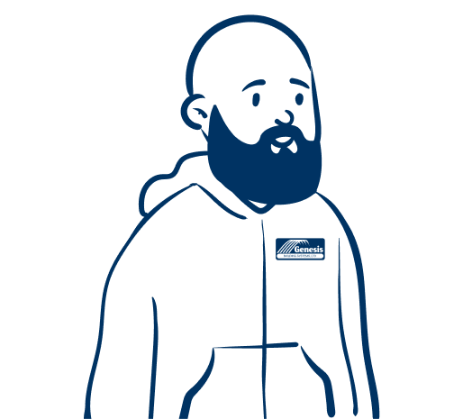
Inspection Technician
CEO
Admin Assistant
The primary hurdle in our planning process revolved around determining prioritization. Our initial emphasis was on addressing the requirements of Tim Technician and Billy Boss, aiming to equip Annie Admin with essential customer and inspection data for the subsequent implementation of quoting features.
Recognizing the importance of expediting the customer data feature and the inspection flow, we established an MVP approach for these top priorities.
Inconsistencies in language across the legacy applications prompted us to redefine job categories—Inspections, Work Orders, and Solutions jobs. This strategic shift aimed to bring clarity and uniformity to the inspection workflow.
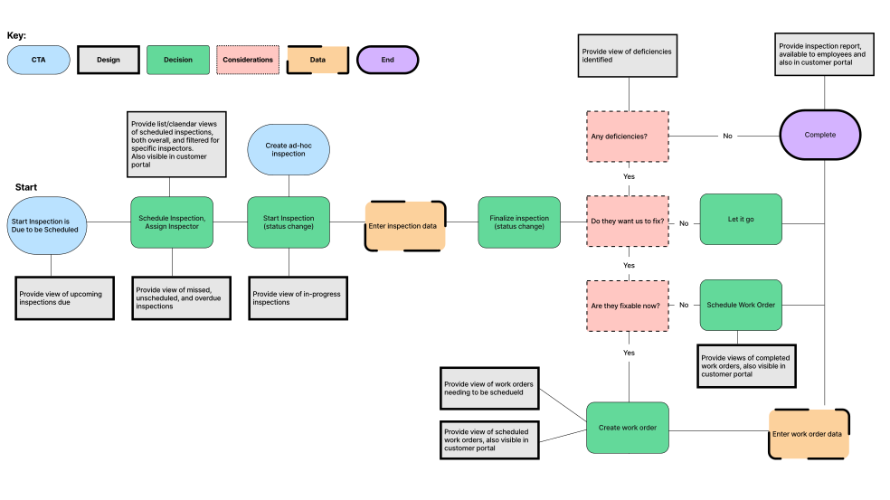
Recognizing the importance of a well-defined deficiencies tab, we had one of the technicians walk us through the process of marking something as a deficiency. Multiple storyboards were created to represent various scenarios, ensuring a comprehensive and intuitive solution.
**Storyboard illustrations were created using Adobe Firefly.
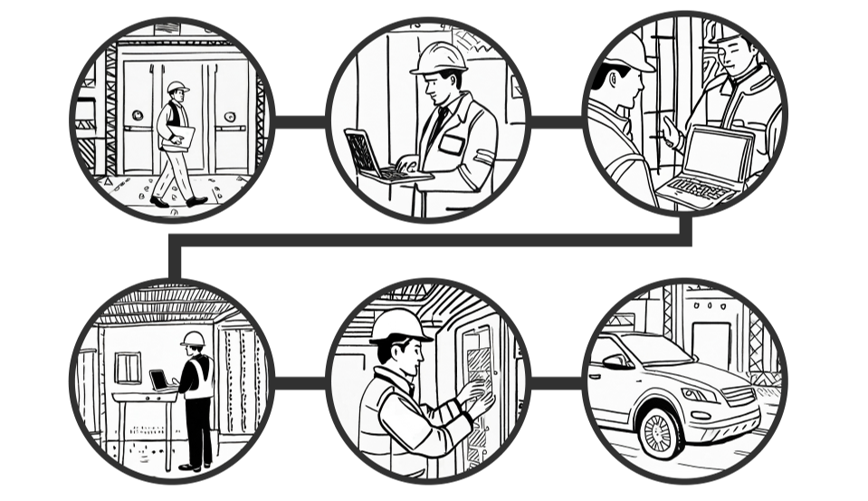
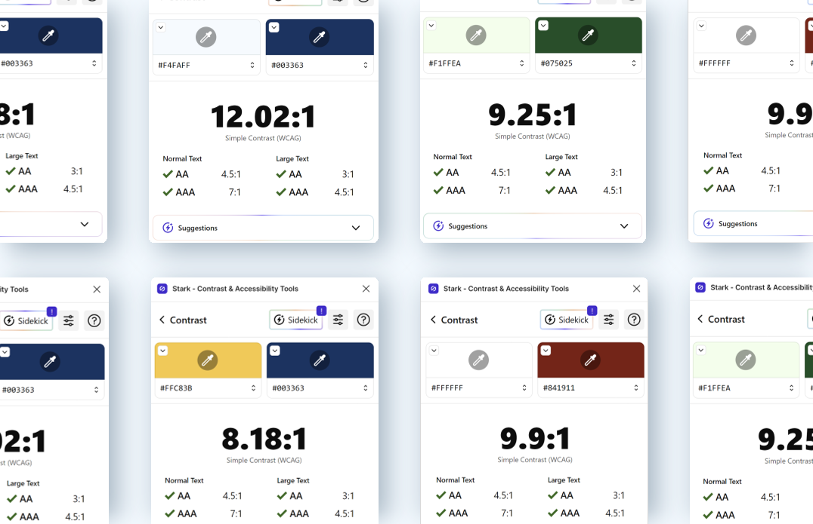
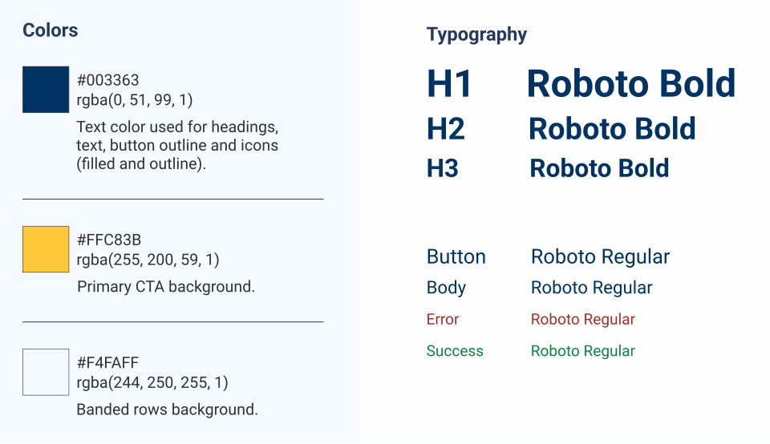
Understanding that 95% of the color-blind community is male, and considering the predominant male user base, we conducted extensive color testing to guarantee our branding guidelines catered to users in this category.
Our approach not only addressed inclusivity, but also focused on minimizing visual load. To achieve this, we deliberately opted for a straightforward color guide, incorporating only two primary colors and a single color for the call-to-action (CTA).
We relied on the Blazor Syncfusion component library for the majority of the User Interface. Despite its extensive features, we encountered a shortage of specific icons essential for our application. To address this gap, I took the initiative to design a custom icon font. Utilizing Figma and FontForge, we seamlessly integrated this personalized icon set across the application, ensuring a cohesive and tailored visual experience.
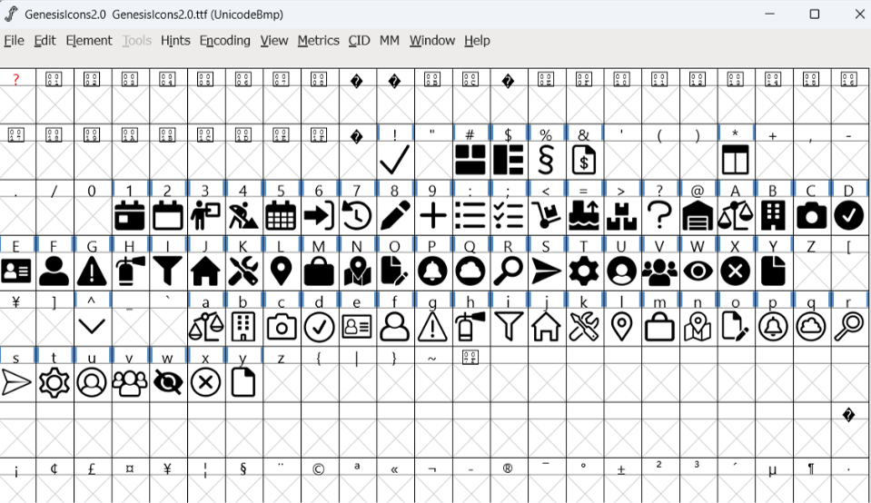
Many iterations resulted in a streamlined, cloud-based application that significantly increased business productivity for Genesis Building Systems. The unified platform now allows for efficient management of customer accounts, contacts, and inspections.

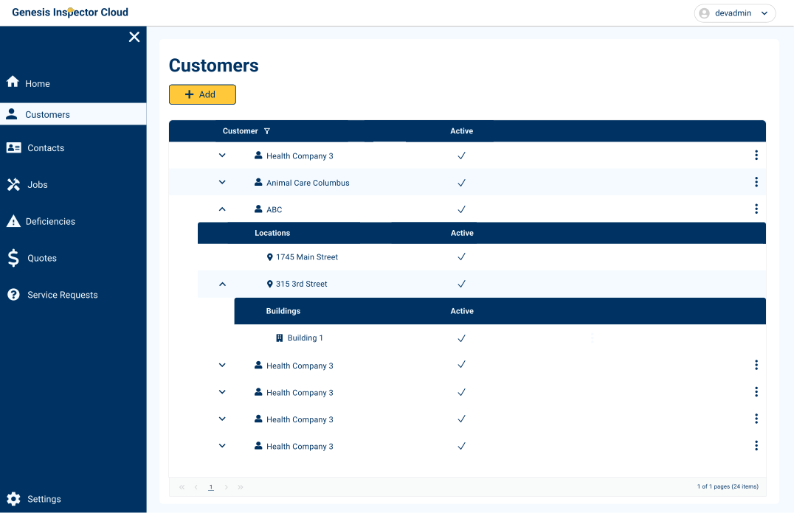
Our design journey kicked off with a concentrated effort on shaping the Customer tab, this unfolded through collaboration with key users—Billy Boss and Tim Technician. While delving into consultations with these users, insights emerged, revealing the necessity for adaptations to the original database structure inherited from Inspector Cloud 4.3, the legacy software. These early revelations prompted a thoughtful reassessment, ultimately laying the foundation for establishing a standardized language for categorizing customer account types.
We determined that a customer would serve as the top-level category for an account. This hierarchical structure allowed for the inclusion of multiple location sites and buildings within each customer account, fostering a comprehensive and intuitive organizational framework.
Recognizing the dynamic nature of contact data, where individuals might transition between customer accounts, we prioritized flexibility in our design. This approach ensured that the system could seamlessly accommodate scenarios where a contact needed to change associations from one customer to another, or, where a contact may belong to more than one customer account.
In response to the specific needs of Billy Boss and Annie Admin, who required quick access to an overview of all contacts, we implemented a dedicated contact table. This table provided a concise and organized view of contact data, allowing for efficient tracking and management of contacts across various customer accounts.
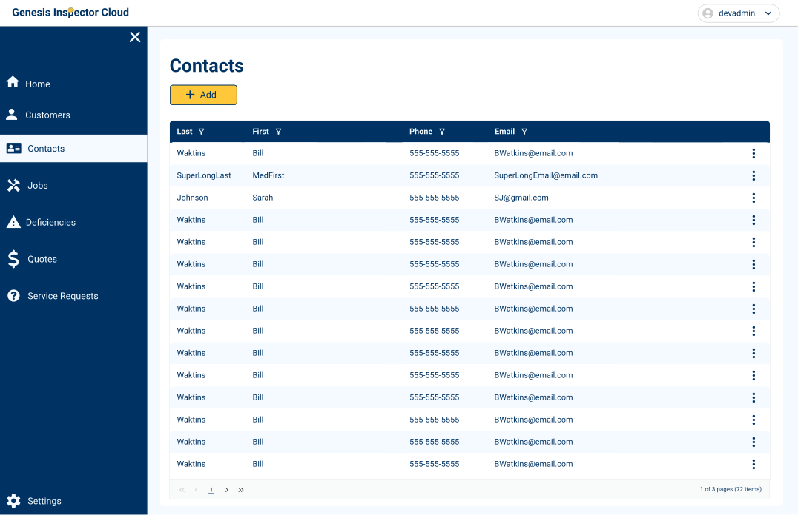
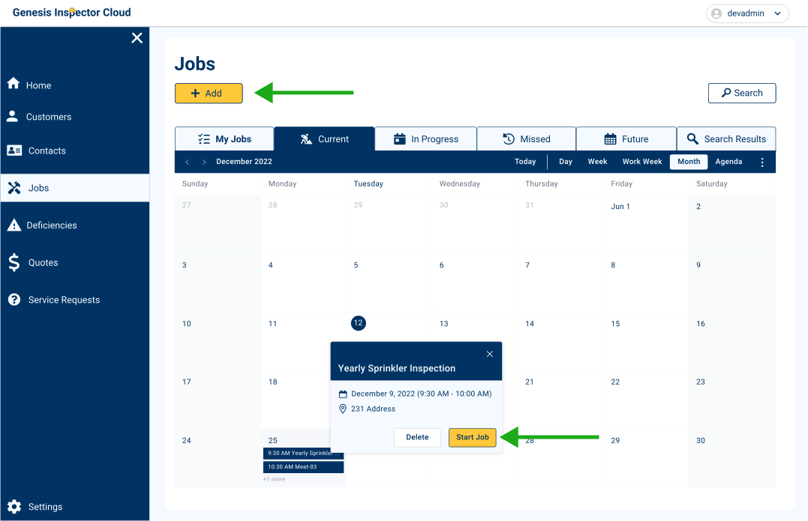
In crafting the Jobs tab, we focused on incorporating a schedule view that showcased all ongoing jobs ("current" was the language the users agreed upon)—a feature highly favored by those transitioning from RazorSync.
This central hub served as the go-to location for initiating inspection reports by selecting "Start Job". Users found convenience in using the "Add Job" call-to-action to seamlessly integrate small work orders while on-site, streamlining their workflow and enhancing overall efficiency.
If a device was marked "fail" during a job, the report would automatically add it to the deficiencies tab where it could be archived, assigned to a quote, or auto-approved and fixed in the same day.
The Deficiencies tab emerged as a vital component post-job completion, housing a comprehensive overview of all identified issues or failed aspects. Enabling users to add deficiencies across different reports ensured that a deficiency wasn't tied to a specific inspection, promoting a more flexible and comprehensive approach.
The "Assign Quote" option proved invaluable, allowing users to seamlessly transition a deficiency to the Quotes tab, whether awaiting manual approval or facilitating an auto-approval.
Additionally, the "See Report" button provided quick access to the original inspection report, allowing users to review notes and contextual information related to the identified deficiency, further optimizing the inspection workflow.
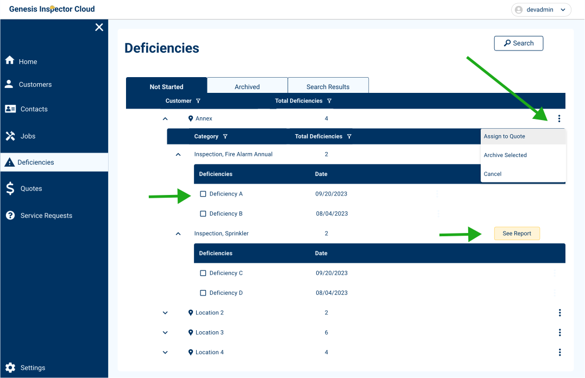
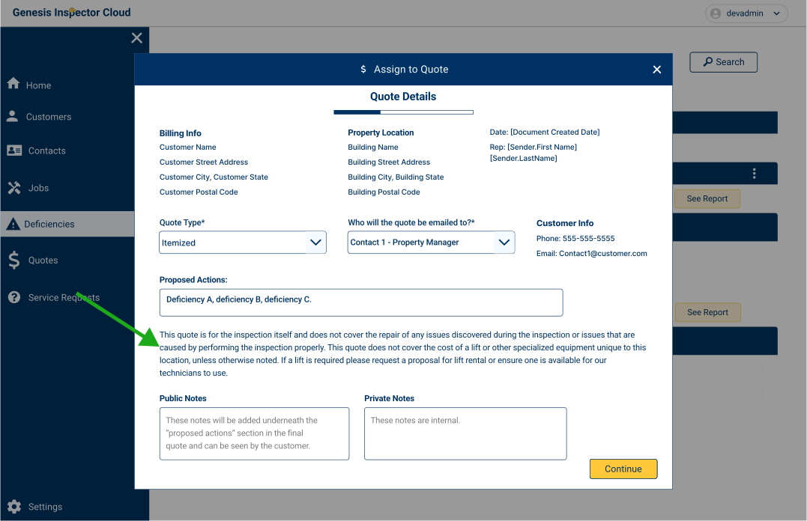
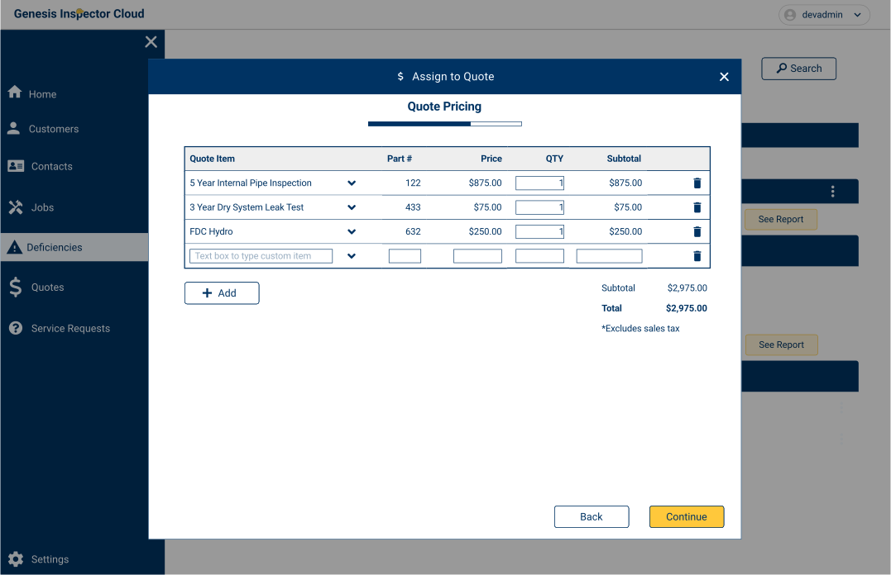
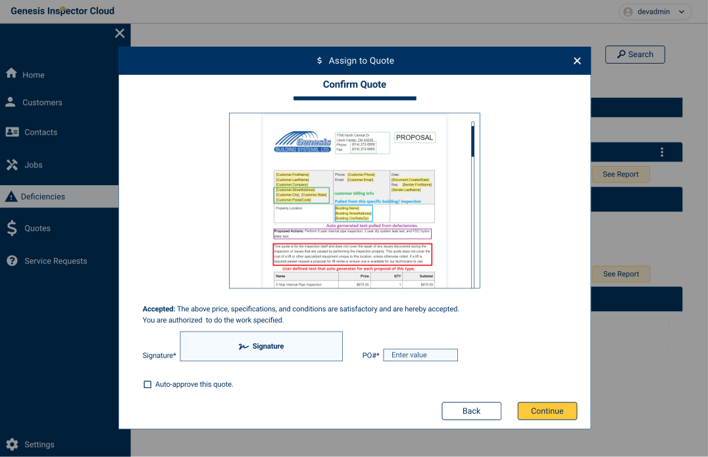
After a deficiency was assigned to a quote, it traveled to the quotes tab. The quotes tab acted as the central hub for managing and tracking quotes. We introduced an "Archived" tab and implemented an automatic expiry date fora all quotes, ensuring a dynamic and organized system. If a quote awaited customer approval for over 90 days, it transitioned to the "Archived" tab.
Moreover, users had the flexibility to manually archive quotes in response to customer updates, such as self-fixes or a change in their service requirements, adding a layer of responsiveness to the overall workflow. This seamless integration between the Deficiencies and Quotes tabs not only streamlined the process from issue identification to customer approval but also offered adaptive features to accommodate changing circumstances.
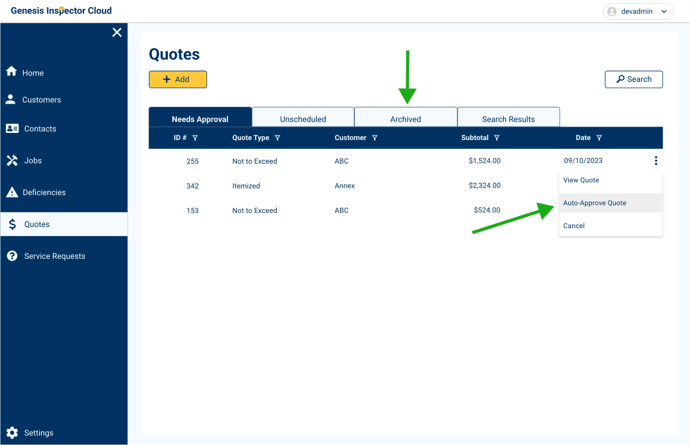